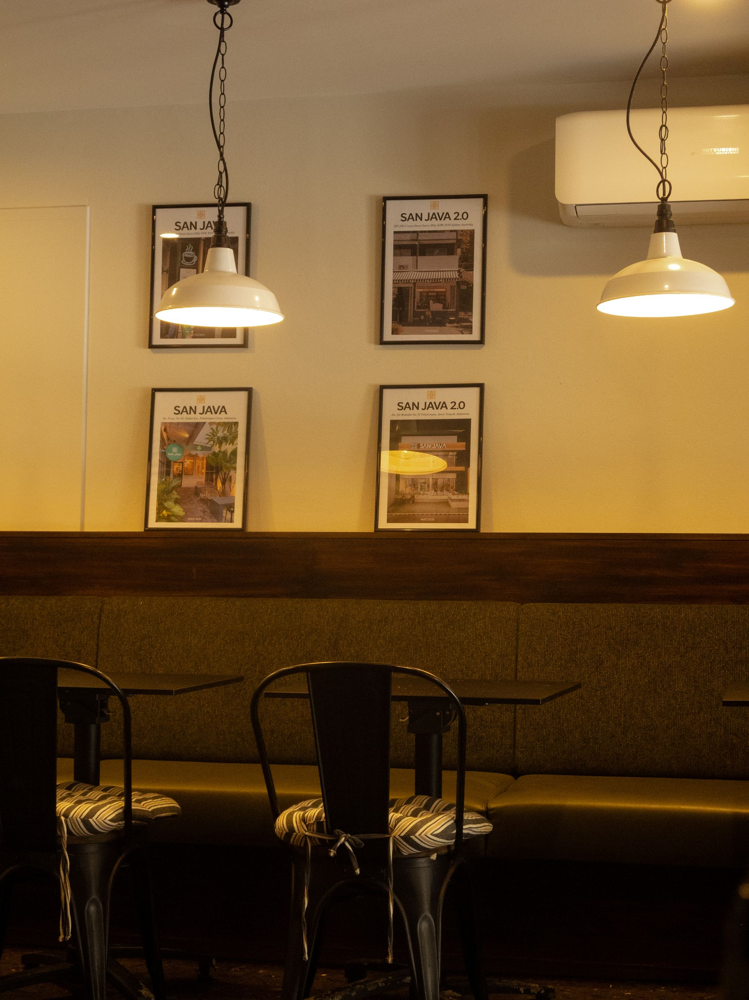

Hi, I'm Sat.
I started shooting portraits for friends around Sydney on a 35mm camera, and a few point-and-shoots along the way, and the habit never really left me, even after moving to digital. What stuck was the approach: shoot for how a photo will be remembered, not just how it looks at first glance.
Today, Sat's Photography works with individuals, couples, families and small local brands across Sydney, covering portrait sessions, engagements and small celebrations, and lifestyle content days. Every gallery is edited by hand, in small batches, with warm, filmic colour as the constant thread through all three types of work.

Values
- Honesty in colour. Skin tones and light are graded to look like the moment felt, not like a trend.
- Small, intentional galleries. Fewer, stronger images beat hundreds of near-duplicates to sort through.
- Respect for people's time. Sessions are planned tightly so clients aren't left waiting on locations or setups.
- Clear consent and privacy. Images are only shared publicly with a client's permission, see the Contact page for how enquiry details are handled.
From enquiry to delivery
-
Enquiry & consultation
Send a booking request through the Contact page with your date, session type and vision. Sat replies within 1–2 days to talk through details.
-
Planning
Location, timing and outfit or styling suggestions are confirmed ahead of the shoot, based on the season and available light.
-
The shoot
Sessions run relaxed and mostly candid — direction is light-touch, so the photos feel like you, not a posed catalogue.
-
Edit & delivery
A sneak peek goes out within 48 hours, with the full edited gallery delivered as an online link within 2–3 weeks.